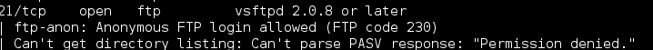

This is a Stapler challenge from vulnhub.com. You can obtain the virtual machine from: here
''' The primary object is to got root. '''
Our nmap scan:

After running nmap script scan with -A switch:
- Ftp Anon login allowed 
This is a Stapler challenge from vulnhub.com. You can obtain the virtual machine from: here
''' The primary object is to got root. '''
Our nmap scan:
After running nmap script scan with -A switch: